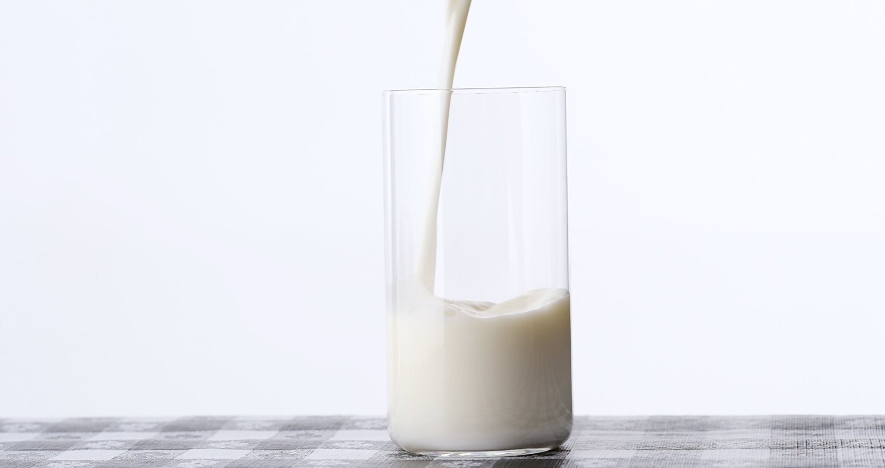
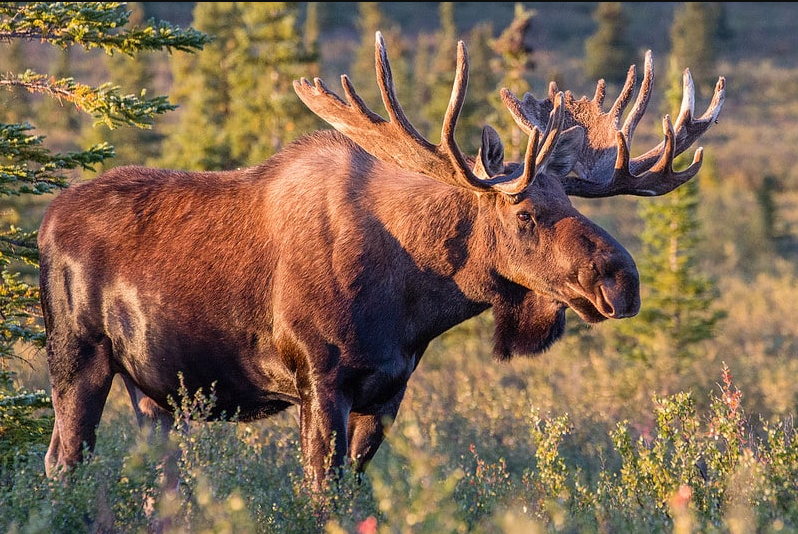

Just have a Taste

10 Pounds of Milk
To create a pound of cheese, you'll need a minimum of 10 pounds of milk. This is because cheese-making involves extracting most of the liquid from the milk. It makes perfect sense when you think about it!

Moose Cheese
Did you know that moose cheese is one of the rarest foods on earth? There are only three moose in the world that are used to produce this cheese, and they all live in Bjursholm, Sweden. The Elk House company is responsible for producing this unique cheese, which is sold at a high price of around $450 per pound due to its limited quantity.